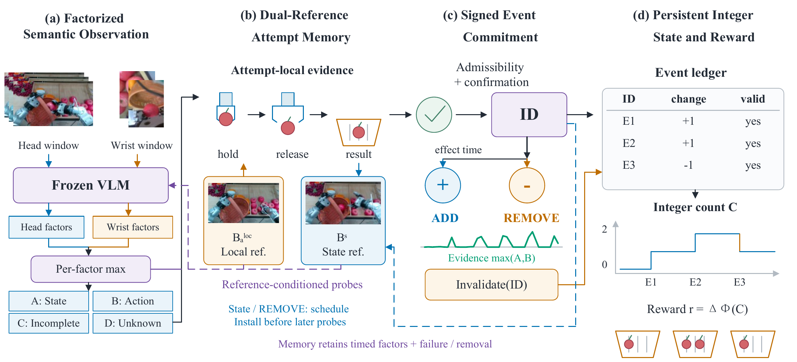

Read evidence
Frozen VLM logits → semantic factors.
EVIDENCE → STATE
THE METHOD
Frozen VLM logits → semantic factors.
Fuse views with dual-reference memory.
Assign an event ID and signed change.
Replay the ledger. Reward state changes.

THE IDEA
Associate observations. Count each accepted operation once.
Preserve the count when the target leaves view.
Record removals. Correct mistaken events.
REAL-ROBOT DEMOS
Add, replay, occlude, or reverse an event.
| Event ID | Effect | Status |
|---|---|---|
| No committed events yet. | ||
Start with an empty target. Add the first object.
RESULTS
Compared with Window-RoboMeter, the strongest rolling-window baseline by macro F1.
| Method | F1@1s ↑ | MAE ↓ |
|---|---|---|
| Window-TOPReward | 0.253 | 1.739 |
| Window-GVL | 0.322 | 1.528 |
| Window-RoboMeter | 0.608 | 1.218 |
| PES-Reward | 0.655 | 0.569 |